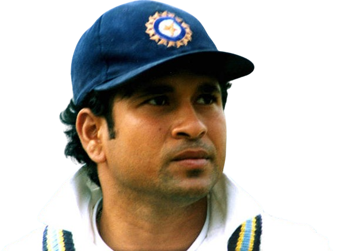

Sachin Tendulkar

👉
Tendulkar, the epitome of cricketing brilliance, etched his name in history with unmatched talent and dedication.
👉
From Mumbai's streets to cricket's grandest stages, he embodied the spirit of the game, inspiring millions with his genius.
👉
Master Blaster, he wielded his bat like a magician, weaving spells with every stroke, captivating audiences worldwide.
👉
His records speak volumes of his dominance, yet it was his humility and passion that truly endeared him to cricket fans.
👉
Centuries flowed from his blade like poetry, each inning a testament to his unwavering commitment and unparalleled skill.
👉
As chants of "Sachin, Sachin" echoed in stadiums, he stood as a symbol of hope, resilience, and sheer excellence.
👉
Beyond the boundaries, Sachin's impact transcended cricket, uniting nations and bridging cultures with his universal appeal.
👉
With grace and grit, he faced challenges head-on, conquering adversities to emerge as a true champion of the game.
👉
His legacy is not just in numbers but in the countless hearts he touched, igniting dreams and fueling aspirations.
👉
As he bid farewell, the cricketing world paused to salute a legend, grateful for the memories and inspiration he bestowed.
👉
Sachin Tendulkar, a name synonymous with excellence, continues to shine as a guiding light for future generations of cricketers.
👉
Though he may have retired from the pitch, his spirit lives on, reminding us that with passion and perseverance, anything is possible.
👉
Thank you, Sachin, for the joy, the magic, and the memories. Your legacy will forever inspire and unite cricket lovers worldwide.
A Tribute to the God of Cricket Master Blaster Sachin Tendulkar
By Nitish
Social Links :